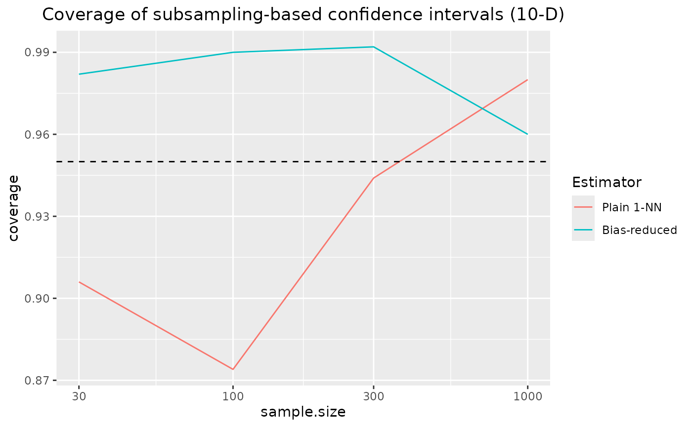

Confidence intervals for KL divergence (high-dimensional)
uncertainty-quantification-10d.RmdLoad required packages
For reproducibility
set.seed(0)We consider two highly correlated Gaussian distributions in 10-D. This is a scenario in which the KL divergence estimation benchmark has shown bias reduction to yield a considerable benefit. Here, we investigate coverage of subsampling based confidence intervals for these two estimators.
D <- 10
Sigma <- constDiagMatrix(dim = D, diag = 1, offDiag = 0.999)
sampler <- function(n, param) mvrnorm(n = n,
mu = param$mu,
Sigma = param$sigma)
q <- function(x) mvdnorm(x,
mu = paramApprox$mu,
Sigma = paramApprox$sigma)Analytical KL-D
kld <- kld_gaussian(
mu1 = paramTrue$mu,
sigma1 = paramTrue$sigma,
mu2 = paramApprox$mu,
sigma2 = paramApprox$sigma
)Samples of different sizes are drawn, with several replicates per sample size
samplesize <- c(30,100,300,1000)
nRep <- 500L
scenarios <- combinations(
sample.size = samplesize,
replicate = 1:nRep
)Subsampling methods
We use the following subsampling methods:
subsmethod <- list(
sub_nn = function(...) kld_ci_subsampling(..., estimator = kld_est_nn),
sub_br = function(...) kld_ci_subsampling(..., estimator = kld_est_brnn)
)
subsamplingMethodLabels <- c(
sub_nn = "Plain 1-NN",
sub_br = "Bias-reduced"
)
nmethod <- length(subsmethod)Uncertainty quantification of estimators
Calculation of empirical coverage
# allocating results matrices
nscenario <- nrow(scenarios)
covered <- matrix(nrow = nscenario,
ncol = nmethod,
dimnames = list(NULL, names(subsmethod)))
# looping over scenarios
for (i in 1:nscenario) {
n <- scenarios$sample.size[i]
X <- sampler(n = n, param = paramTrue)
Y <- sampler(n = n, param = paramApprox)
# different algorithms are evaluated on the same samples
for (j in 1:nmethod) {
kldboot <- subsmethod[[j]](X, Y, B = 1000L)
covered[i,j] <- kldboot$ci[1] <= kld && kld <= kldboot$ci[2]
}
}Combine scenarios with CI coverage information:
results <- cbind(scenarios, covered) |> melt(measure.vars = names(subsmethod),
value.name = "covered",
variable.name = "subsmethod") Compute coverage per sample size / algorithm / distribution:
Results: coverage of confidence intervals for KL divergence
ggplot(coverage, aes(x = sample.size, y = coverage, color = subsmethod)) +
geom_line() +
scale_x_log10() +
geom_hline(yintercept = 0.95, lty = 2) +
scale_color_discrete(name = "Estimator",
labels = subsamplingMethodLabels) +
ggtitle("Coverage of subsampling-based confidence intervals (10-D)") +
theme(plot.title = element_text(hjust = 0.5))
\(\Rightarrow\) coverage of the confidence intervals based on nearest neighbour density estimation approaches the nominal coverage of 95% for increasing sample sizes.